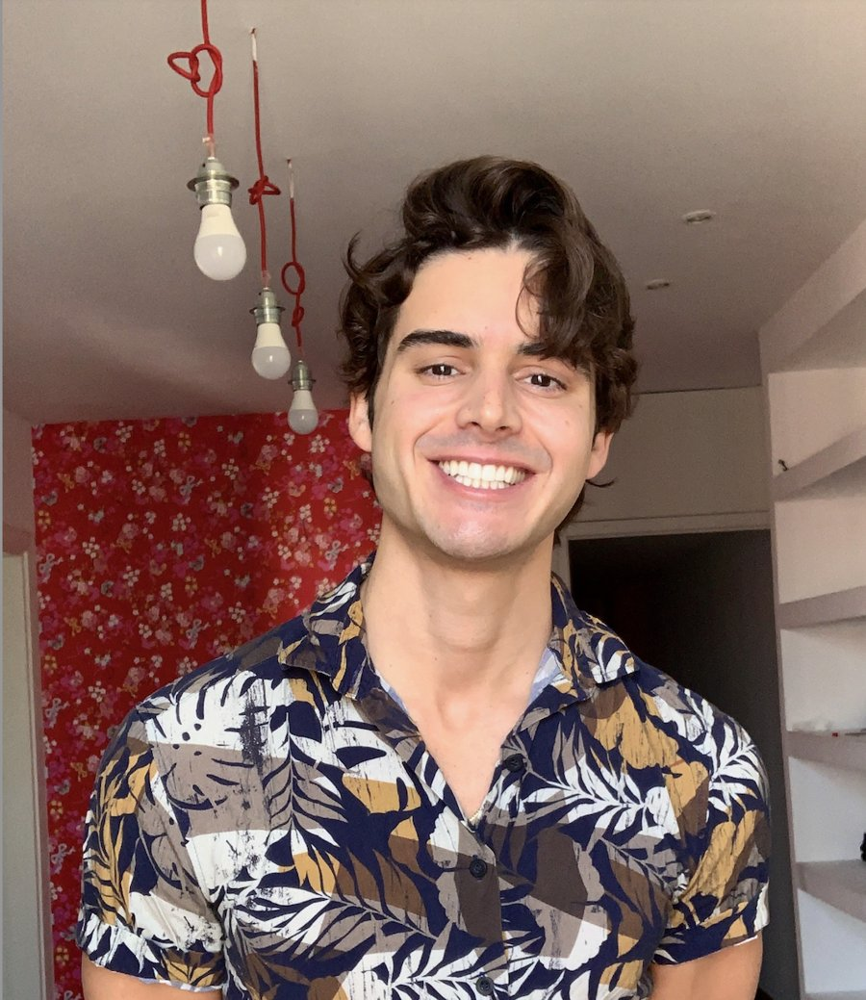

From words
to
connection.
conexión.
تواصل.
つながり。
connexion.
Seven years of teaching and coaching. Now building tools that help people find their words, across languages.
Columbia IR and human rights, UNHCR and OECD, 7+ years of writing and rhetorical coaching. Passionate about rhetoric, intercultural communication, and tools that enhance connection and clarity across languages and cultures.

Rhetoric and advocacy
Working with refugees and rights advocates showed me that whoever finds the right words is the one who gets heard. I want every cause to have language as strong as its case.
UN and Advocacy Speechwriter ↗
Built on 11,142 UN General Debate speeches, 1946–2025, with controls for audience, tone and rhetorical moves.
Language and communication
Living in many languages taught me that meaning is more than translation. I build for the moments when people reach for each other across a language gap.
Whimsify ↗
Rewrites any phrase in a chosen whimsical voice, in eight languages, without storing what you type. Also available as an iPhone app.
Visual storytelling
Learning Japanese taught me that a character sticks once it has a story. I want learning a language to feel like watching something come alive.
Kanji in Motion: From Stroke to Story ↗
Short animated chapters where each kanji is drawn stroke by stroke, then comes alive in a scene and a spoken sentence. Two chapters out so far, following WaniKani's level order.
Pedagogy and education
From mentoring neurodivergent kids to coaching essays, I've seen how the right question unlocks a voice. I teach so people can say it themselves.
Story Detective: College Essays ↗
The AI asks the questions, students answer them introspectively, their answers reveal their underlying purpose and they get to write every word in their own voice.
Grammar Guide: SAT ↗
Built to help teenagers with neurodiverse profiles understand and apply grammatical concepts on standardized tests.
Photography
Some things are understood before they're ever said. Photography is how I notice them.
The gallery ↗
Street Sights, Miami Skies, Elsewhere, Serendipity, Pareidolia, Passersby and Fellow Travelers.